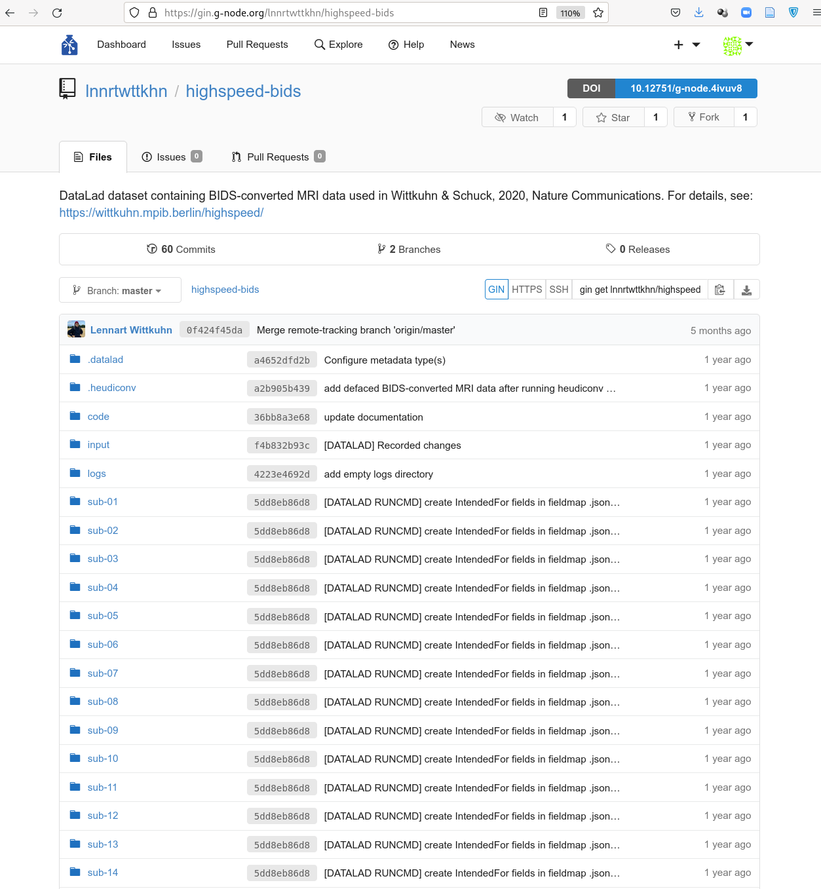

Quick recap

Quick recap

Quick recap

Quick recap

Quick recap

Before we begin...
Any left-over questions from yesterday?Drop & remove
- Try to remove (rm) one of the pictures in your dataset. What happens?
- Version control tools keep a revision history of your files - file contents are not actually removed when you rm them. Interactions with the revision history of the dataset can bring them "back to life"
Drop & remove
- Clone a small example dataset to drop file contents and remove datasets:
$ datalad clone https://github.com/datalad-datasets/machinelearning-books.git $ cd machinelearning-books $ datalad get A.Shashua-Introduction_to_Machine_Learning.pdf - datalad drop removes annexed file contents from a local dataset
annex and frees up disk space. It is the antagonist of get (which can get files and subdatasets).
$ datalad drop A.Shashua-Introduction_to_Machine_Learning.pdf drop(ok): /tmp/machinelearning-books/A.Shashua-Introduction_to_Machine_Learning.pdf (file) [checking https://arxiv.org/pdf/0904.3664v1.pdf...] - But: Default safety checks require that dropped files can be re-obtained to prevent accidental data loss. git annex whereis reports all registered locations of a file's content
- drop does not only operate on individual annexed files,
but also directories, or globs, and it can uninstall subdatasets:
$ datalad clone https://github.com/datalad-datasets/human-connectome-project-openaccess.git $ cd human-connectome-project-openaccess $ datalad get -n HCP1200/996782 $ datalad drop --what all HCP1200/996782
Drop & remove
- datalad remove removes complete dataset or dataset hierarchies
and leaves no trace of them. It is the antagonist to clone.
# The command operates outside of the to-be-removed dataset! $ datalad remove -d . machinelearning-books uninstall(ok): /tmp/machinelearning-books (dataset) - But: Default safety checks require that it could be re-cloned in its most recent version from other places, i.e., that there is a sibling that has all revisions that exist locally datalad siblings reports all registered siblings of a dataset.
Drop & remove
- Create a dataset from scratch and add a file
$ datalad create local-dataset $ cd local-dataset $ echo "This file content will only exist locally" > local-file.txt $ datalad save -m "Added a file without remote content availability" - datalad drop refuses to remove annexed file contents if it
can't verify that datalad get could re-retrieve it
$ datalad drop local-file.txt $ drop(error): local-file.txt (file) [unsafe; Could only verify the existence of 0 out of 1 necessary copy; (Note that these git remotes have annex-ignore set: origin upstream); (Use --reckless availability to override this check, or adjust numcopies.)] - Adding --reckless availability overrides this check
$ datalad drop local-file.txt --reckless availability - Be mindful that drop will only operate on the most recent version of a file - past versions may still exist afterwards unless you drop them specifically. git annex unused can identify all files that are left behind
Drop & remove
- datalad remove refuses to remove
datasets without an up-to-date sibling
$ datalad remove -d local-dataset uninstall(error): . (dataset) [to-be-dropped dataset has revisions that are not available at any known sibling. Use `datalad push --to ...` to push these before dropping the local dataset, or ignore via `--reckless availability`. Unique revisions: ['main']] - Adding --reckless availability overrides this check
$ datalad remove -d local-dataset --reckless availability
Removing wrongly
-
Using a file browser or command line calls like rm -rf on datasets is doomed to fail.
Recreate the local dataset we just removed:
$ datalad create local-dataset $ cd local-dataset $ echo "This file content will only exist locally" > local-file.txt $ datalad save -m "Added a file without remote content availability" - Removing it the wrong way causes chaos and leaves an usuable dataset corpse behind:
$ rm -rf local-dataset rm: cannot remove 'local-dataset/.git/annex/objects/Kj/44/MD5E-s42--8f008874ab52d0ff02a5bbd0174ac95e.txt/ MD5E-s42--8f008874ab52d0ff02a5bbd0174ac95e.txt': Permission denied - The dataset can't be fixed, but to remove the corpse chmod (change file mode bits) it (i.e., make it writable)
$ chmod +w -R local-dataset $ rm -rf local-dataset
Publishing datasets
| How to share your work with others |
Repository hosting services, siblings, and datalad push |
Publishing datasets
I have a dataset on my computer. How can I share it, or collaborate on it?
"Share data like source code"
- Datasets can be cloned, pushed, and updated from and to local and remote paths, remote hosting services, external special remotes
- Examples:
Local path
Remote path../my-projects/experiment_data
Hosting servicemyuser@myinstitutes.hcp.system:/home/myuser/my-projects/experiment_data
External special remotesgit.github.com:myuser/experiment_data.gitosf://my-osf-project-id

Interoperability
- DataLad is built to maximize interoperability and use with hosting and storage technology
 See the chapter
Third party infrastructure for walk-throughs for different services
See the chapter
Third party infrastructure for walk-throughs for different services
Interoperability
- DataLad is built to maximize interoperability and use with hosting and storage technology
 See the chapter
Third party infrastructure for walk-throughs for different services
See the chapter
Third party infrastructure for walk-throughs for different services
Glossary
- Sibling (remote)
- Linked clones of a dataset. You can usually update (from) siblings to keep all your siblings in sync (e.g., ongoing data acquisition stored on experiment compute and backed up on cluster and external hard-drive)
- Repository hosting service
- Webservices to host Git repositories, such as GitHub, GitLab, Bitbucket, Gin, ...
- Third-party storage
- Infrastructure (private/commercial/free/...) that can host data. A "special remote" protocol is used to publish or pull data to and from it
- Publishing datasets
- Pushing dataset contents (Git and/or annex) to a sibling using datalad push
- Updating datasets
- Pulling new changes from a sibling using datalad update --merge
Sharing datasets
- Most public datasets separate content in Git versus git-annex behind the scenes

Sharing datasets

Sharing datasets

Sharing datasets
Typical case:- Datasets are exposed via a private or public repository on a repository hosting service
- Data can't be stored in the repository hosting service, but can be kept in almost any third party storage
-
Publication dependencies automate pushing to the correct place, e.g.,
$ git config --local remote.github.datalad-publish-depends gdrive # or $ datalad siblings add --name origin --url git@git.jugit.fzj.de:adswa/experiment-data.git --publish-depends s3

Sharing datasets
- Real-life example 1:
GitHub for repository hosting, data hosting via datapub.fz-juelich.de + GNODE

Sharing datasets
- Real-life example 2:
GitLab for repository hosting, data hosting via internal webserver (access restricted)

Sharing datasets
- Real-life example 3:
GitHub for repository hosting, data hosting via Amazon S3 (requires DUA)

Sharing datasets
Special case 1: repositories with annex support

Sharing datasets
Special case 2: Special remotes with repositories

Sharing datasets
Special case 1: repositories with annex support
[LIVE DEMO GIN]Sharing datasets
Special case 2: Special remotes with repositories
Requires the DataLad extension datalad-osf[LIVE DEMO OSF]
Sharing datasets
Special case 2: Special remotes with repositories
Requires the DataLad extension datalad-next[DEMO WEBDAV]
source: youtube.com/watch?v=XkcwpqPQHQY
Sharing datasets
Special case 3: RIA stores for dataset hosting/backup
Tutorial for large scale, reproducible computation: github.com/psychoinformatics-de/fairly-big-processing-workflowSharing datasets
-
DataLad can create siblings from the command line for the following services:
- GitHub
datalad create-sibling-github- GitLab
datalad create-sibling-gitlab- Gin
datalad create-sibling-gin- Gogs
datalad create-sibling-gogs- local or remote paths
datalad create-sibling- RIA stores
datalad create-sibling-ria- Open Science Framework (needs datalad-osf)
datalad create-sibling-osf- WebDAV-based hosting (e.g., Sciebo, EOSC; needs datalad-next)
datalad create-sibling-webdav
(Additional services being worked on at this moment: Dataverse, ebrains;
Get in touch with additional service support requests)
Cloning DataLad datasets
How does cloning dataset feel like for a consumer?
Cloning DataLad datasets
How does cloning dataset feel like for a consumer?
Cloning DataLad datasets
How does cloning dataset feel like for a consumer?
Cloning DataLad datasets
Let's take a look at the special cases:[LIVE DEMO CLONING GIN]
Cloning DataLad datasets
Let's take a look at the special cases:Requires the DataLad extension datalad-osf
[LIVE DEMO CLONING OSF]
Cloning DataLad datasets
Let's take a look at the special cases:Requires the DataLad extension datalad-next
[DEMO CLONING WebDAV] source: youtube.com/watch?v=XkcwpqPQHQY
Summary: Data publication

- datasets can have "siblings", linked clones in other places
- Those can be local or remote, on commercial, free, or personal infrastructure
- Typical repository hosting services do not host annexed contents
- A notable exception is Gin
- Typical storage providers do not host Git repositories
- but datalad extensions can make it possible for certain services, such as the OSF
- Despite the different possible services, operations are streamlined
- clone installs datasets, get retrieves data, push publishes (new changes in) datasets, update pulls dataset updates. This remains the case even if underlying data hosting changes.
- Siblings serve multiple purposes:
- Personal back-up that's easy to sync; Publicly or privately exposed files to share with (selected) others; Entrypoints for collaborations or others' contributions; ...
Publish your own dataset
Code: psychoinformatics-de.github.io/rdm-course/03-remote-collaboration/index.html#publishing-datasets-to-ginUsing Gin for data publication
-
Gin has a few advantages for publishing data
- DataLad Integration: Convenience commands to create siblings
- Annex support: Easiest possible publication, preview and individual download of annexed contents in the webinterface
- Open Science support: Archive datasets to obtain a DOI; ensures minimal metadata and a license
- Private or Public repositories
- Runs on European infrastructure (some data protection officers like this)
- Free, and with yet unlimited storage
Using Gin for data publication
Using Gin for data publication
- Step 1: Create a Gin account (requires an email address)
- Step 2: Generate and upload an SSH key
- Step 3: Create and register a sibling repository
- Step 4: Publish your dataset
- Step 5: Update your dataset
Summary: Publishing and updating data (Gin)
- Gin is a free repository hosting service
- To publish datasets to Gin, you need an account and an SSH key
- DataLad has built-in integration with datalad create-sibling-gin
- This requires generating an access token
- Gin has annex support
- datalad push published all dataset contents and the Git history
- The dataset can be cloned from Gin by others
- If the dataset is public, this does not even require a Gin account
- You can still publish your dataset to (your lab's) GitHub/GitLab/other places
- and use Gin only for data hosting. Walkthrough: handbook.datalad.org/basics/101-139-gin.html#ginbts
Next: Let's collaborate!
Publication and Collaboration Exercise


datalad clone ...datalad save ...datalad create-sibling-gin ...datalad push ...datalad drop ...datalad clone ...datalad save ...datalad push ...Any other attendee could be a collaborator
datalad siblings add ...datalad update ...datalad push ...